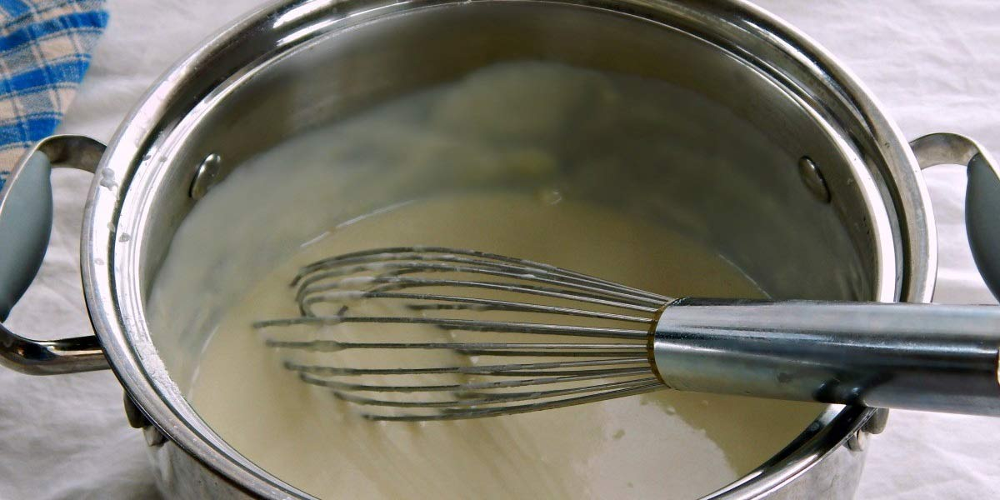

Béchamel Sauce
Recipe Specification
Ingredients List
| Ingredients | Quantity |
|---|---|
| Unsalte Butter | 120g |
| Plain Flour | 120g |
| Whole Milk | 1.2 Litres |
| Black Peppercorns | 6x1 |
| White Onion | 1x1 |
| Bay Leaf | 1 Leaf |
| Ground Nutmeg | ¼ tsp |
| Salt & Pepper | To Taste |
Yield: 1.2 Litres
Preparation
- Peel and cut white onion in half.
Cooking Instructions
- Pour milk into sauce pan and add bay leaf, peppercorns and onion halves. Place saucepan on a low/medium heats and gently bring milk to simmer.
- In a separate saucepan, gently melt butter and whisk flour into it.
- Strain milk and then pour gradually and in stages, into butter and flour whilst whisking. Doing this slowly ensures a smooth sauce.
- Season to taste.

Serving Suggestions
Béchamel sauce can act as a base for a cheese sauce, can be used for mac n cheese, cauliflower cheese and for lasagne.
Storing instructions
Allow jus to cool to room temperature before putting in an air-tight container and placing in the refrigerator. Consume within 4 days of making it
Reheating Instructions
Place in microwave for 1-2 minutes